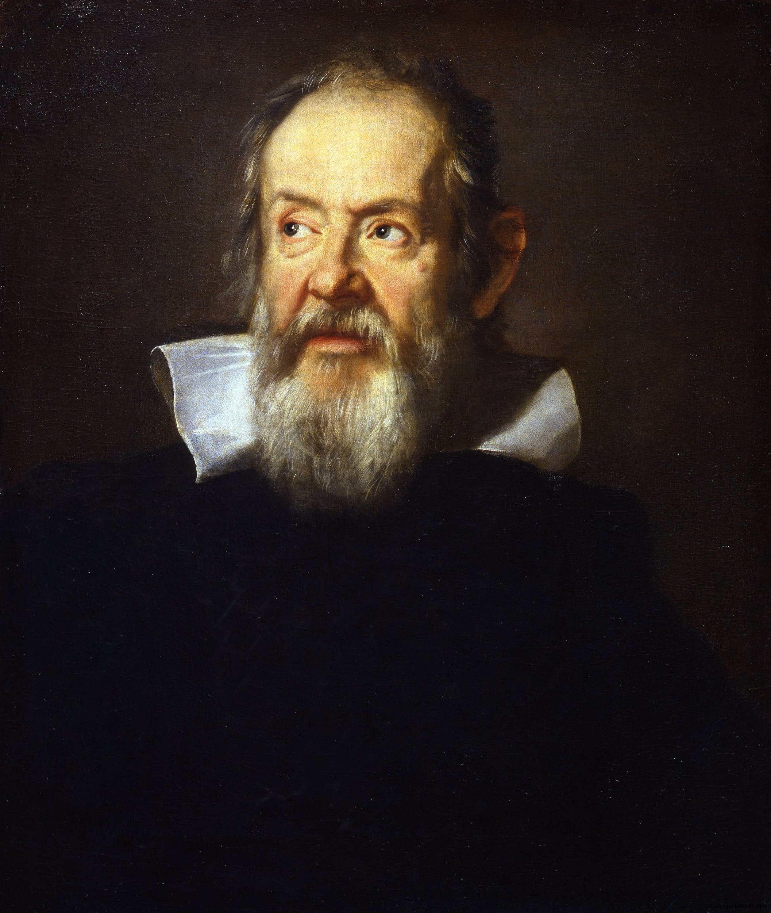
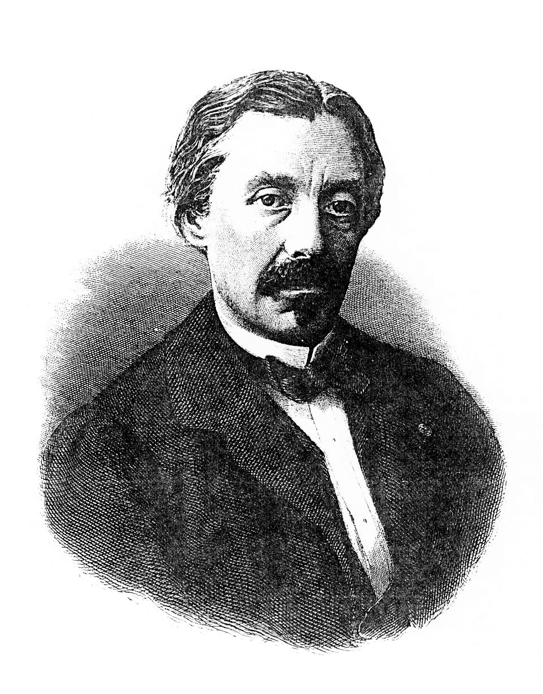

TP guidé
TP pendule
Chaque étape débloque la suivante. Répondez, validez, puis utilisez les outils de mesure, de simulation et d'analyse.
Un parcours complet autour de la dynamique du pendule : acquisition, simulation et analyse.


Chaque étape débloque la suivante. Répondez, validez, puis utilisez les outils de mesure, de simulation et d'analyse.
θ(t) is the pendulum angle [°] as a function of time. We fit this damped sinusoidal model over the selected window: A = initial amplitude [°], δ = exponential decay rate [s⁻¹], ω = 2π/T = angular frequency [rad/s], f = 1/T = oscillation frequency [Hz], φ = phase offset [rad], B = DC offset [°]. Dashed lines = decay envelope ±A·e−δt.
The exact pendulum ODE is non-linear: the restoring torque is proportional to sin(θ). For small angles, sin(θ) ≈ θ (in radians), giving a simple harmonic oscillator.
The theoretical period is T₀ = 2π√(L/g). For larger amplitudes the real period increases (non-isochronous). The slider below shows how the linearization error grows with amplitude.
The damping ratio ζ classifies the transient response of a second-order system.
For the pendulum: ζ = b / (2·√(m·g·L·I⁻¹·M)). A pendulum in air has ζ ≪ 1 (underdamped). Drag the slider to explore all regimes and notice how the critical damping produces the fastest return to rest without oscillation.
System identification estimates the parameters of a mathematical model from measured data. We observe θ(t) and search for [b, m, L] that minimize the residuals between model and measurement.
We use the Nelder-Mead simplex algorithm — a derivative-free optimizer. It builds a geometric simplex in parameter space and iteratively reflects, expands or contracts vertices toward the minimum.
Key advice: use 10–30 s of clean data (no startup transient), and provide a physically reasonable initial guess. The algorithm is run in Tab 3, Analysis ④.
With identical initial conditions, the linear model oscillates slightly faster than the exact ODE, since it underestimates the restoring force for large θ. The phase gap accumulates over time.
If measurement data is loaded (Tab 2), it appears in red. The quality of the model fit depends on how well the identified parameters [b, m, L] from Sys-ID match the physical system.